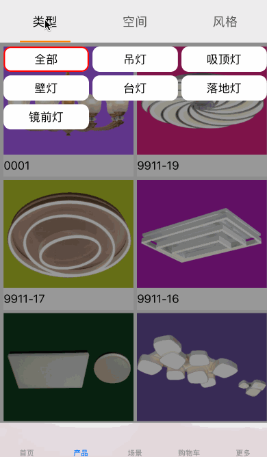

一个 Menu
效果： 
MenuCell.h
#import <UIKit/UIKit.h>
@protocol MenuCell <NSObject>
- (void) selectIt;
- (void) deselectIt;
@end
@interface MenuCell : UIView<MenuCell>
@end
MenuCell.m
#import "MenuCell.h"
@implementation MenuCell
- (void) selectIt {
}
- (void) deselectIt {
}
@end
MenuC.h
#import <UIKit/UIKit.h>
#import "MenuCell.h"
@protocol MenuCDataSource;
@protocol MenuCDelegate;
@interface MenuC : UIView
@property(nonatomic,assign) NSInteger currentIndex;
@property(nonatomic,assign,readonly) NSInteger priorIndex;
@property(nonatomic,assign) BOOL pressed;
@property(nonatomic,weak) id<MenuCDataSource> dataSource;
@property(nonatomic,weak) id<MenuCDelegate> delegate;
- (void) reloadData;
#pragma mark - 根据 index 获取 cell
- (UIView*) cellWithIndex:(NSInteger)index;
@end
@protocol MenuCDataSource <NSObject>
@required
//写上需要的协议方法：
- (NSUInteger) numberOfItemsInMenuC:(MenuC*)menu;
- (UIView*) menuC:(MenuC*)menu cellAtIndex:(NSUInteger)index;
//- (UIView <MenuCell> *) menuC:(MenuC*)menu cellAtIndex:(NSUInteger)index;
@end
@protocol MenuCDelegate <NSObject>
//写上需要的协议方法：
- (void) menuC:(MenuC*)menu didSelectCellAtIndex:(NSUInteger)index;
@end
MenuC.m
#import "MenuC.h"
#import "Masonry.h"
@interface MenuC ()
@property(nonatomic,weak) UIView* theLoadView;
@property(nonatomic,assign) BOOL reloadDataSelected;
@end
@implementation MenuC
- (instancetype) initWithFrame:(CGRect)frame {
if (self = [super initWithFrame:frame]) {
[self setupUI];
}
return self;
}
- (instancetype) init {
if (self = [super init]) {
[self setupUI];
}
return self;
}
- (void) setupUI {
if (self.theLoadView) {
return;
}
UIView* theLoadView = [UIView new];
theLoadView.backgroundColor = [UIColor clearColor];
[self addSubview:theLoadView];
[theLoadView mas_makeConstraints:^(MASConstraintMaker *make) {
make.edges.mas_equalTo(0);
}];
self.theLoadView = theLoadView;
_currentIndex = -1;
_priorIndex = -1;
_pressed = NO;
}
- (void) didMoveToSuperview {
[super didMoveToSuperview];
[self reloadData];
}
- (void) setCurrentIndex:(NSInteger)currentIndex {
_currentIndex = currentIndex;
}
#pragma mark - reloadData 重新加载数据
- (void) reloadData {
//清除陈旧的视图
if ([_theLoadView isKindOfClass:[UIView class]] == NO) {
return;
}
for (UIView* subview in _theLoadView.subviews) {
[subview removeFromSuperview];
}
//将记录前一个触发值重置为-1
_priorIndex = -1;
//统计Menu cell的个数
NSUInteger count = 0;
if (self.dataSource && [self.dataSource respondsToSelector:@selector(numberOfItemsInMenuC:)]) {
count = [self.dataSource numberOfItemsInMenuC:self];
}
if (count == 0) {
return;
}
/*************************************************************************************************
布局 开始
*****************************************************************************/
UIView* priorView = nil;
for (NSUInteger index = 0; index < count; index++) {
UIControl* menuControl = [UIControl new];
menuControl.backgroundColor = [UIColor clearColor];
menuControl.tag = index;
[menuControl addTarget:self action:@selector(pressedControlwithDoSomething:) forControlEvents:UIControlEventTouchUpInside];
[_theLoadView addSubview:menuControl];
/*********************************************************
加载content start
********************************************/
if (self.dataSource && [self.dataSource respondsToSelector:@selector(menuC:cellAtIndex:)]) {
UIView* contentView = [self.dataSource menuC:self cellAtIndex:index];
if ([contentView isKindOfClass:[UIView class]]) {
contentView.userInteractionEnabled = NO;
[menuControl addSubview:contentView];
[contentView mas_makeConstraints:^(MASConstraintMaker *make) {
make.edges.mas_equalTo(0);
}];
}
}
/********************************************
加载content end
*********************************************************/
if (index == 0) {
//第一个
if (count == 1) {
//只有一个
[menuControl mas_makeConstraints:^(MASConstraintMaker *make) {
make.edges.mas_equalTo(0);
}];
} else {
//不止有一个
[menuControl mas_makeConstraints:^(MASConstraintMaker *make) {
make.left.mas_equalTo(0);
make.top.mas_equalTo(0);
make.bottom.mas_equalTo(0);
}];
}
} else if (index == count - 1) {
//最后一个
[menuControl mas_makeConstraints:^(MASConstraintMaker *make) {
make.right.mas_equalTo(0);
make.top.mas_equalTo(0);
make.bottom.mas_equalTo(0);
make.left.mas_equalTo(priorView.mas_right);
make.width.mas_equalTo(priorView.mas_width);
}];
} else {
//中间的
[menuControl mas_makeConstraints:^(MASConstraintMaker *make) {
make.top.mas_equalTo(0);
make.bottom.mas_equalTo(0);
make.left.mas_equalTo(priorView.mas_right);
make.width.mas_equalTo(priorView.mas_width);
}];
}
priorView = menuControl;
}
/*****************************************************************************
布局 结束
*************************************************************************************************/
}
#pragma mark - menu 点击事件
- (void) pressedControlwithDoSomething:(UIControl*)sender {
if ([_theLoadView isKindOfClass:[UIView class]] == NO) {
return;
}
for (UIControl* menuControl in _theLoadView.subviews) {
if ([menuControl isKindOfClass:[UIControl class]]) {
MenuCell* contentView = [[menuControl subviews] lastObject];
if ([contentView isKindOfClass:[UIView class]]) {
if ([contentView respondsToSelector:@selector(deselectIt)]) {
[contentView deselectIt];
}
}
}
}
NSUInteger priorIndex = _currentIndex;
NSUInteger currentIndex = sender.tag;
if (_pressed == NO) {
//说明前面没有点击过，可以直接执行
//有点击的
_pressed = YES;
} else {
//说明前面已经点击过，要判断当前和之前的点击是否一致。
if (priorIndex == currentIndex) {
if (_pressed == YES) {
//已经点击过的，就取消点击
_pressed = NO;
} else {
//点击已经取消了，就重新点击
//有点击的
_pressed = YES;
}
} else {
//说明前面没有点击过，可以直接执行
//有点击的
_pressed = YES;
}
}
if (_pressed == YES) {
UIControl* menuControl = [self cellControlWithIndex:currentIndex];
if ([menuControl isKindOfClass:[UIControl class]]) {
MenuCell* contentView = [[menuControl subviews] lastObject];
if ([contentView isKindOfClass:[UIView class]]) {
if ([contentView respondsToSelector:@selector(selectIt)]) {
[contentView selectIt];
}
}
}
}
_priorIndex = priorIndex;
_currentIndex = currentIndex;
if (self.delegate && [self.delegate respondsToSelector:@selector(menuC:didSelectCellAtIndex:)]) {
[self.delegate menuC:self didSelectCellAtIndex:_currentIndex];
}
}
#pragma mark - 根据 index 获取 cell
- (UIView*) cellWithIndex:(NSInteger)index {
UIControl* control = [self cellControlWithIndex:index];
if ([control isKindOfClass:[UIControl class]]) {
NSArray* subviews = [control subviews];
if ([subviews isKindOfClass:[NSArray class]] &&
[subviews count] > 0) {
return [subviews lastObject];
}
}
return nil;
}
#pragma mark - 根据 index 获取 cell control
- (UIControl*) cellControlWithIndex:(NSInteger)index {
if (index < 0) {
return nil;
}
UIControl* targetView = nil;
for (UIControl* subiew in self.theLoadView.subviews) {
if ([subiew isKindOfClass:[UIControl class]]) {
if (subiew.tag == index) {
targetView = subiew;
break;
}
}
}
return targetView;
}
@end